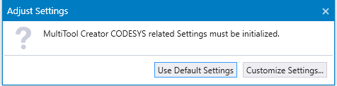
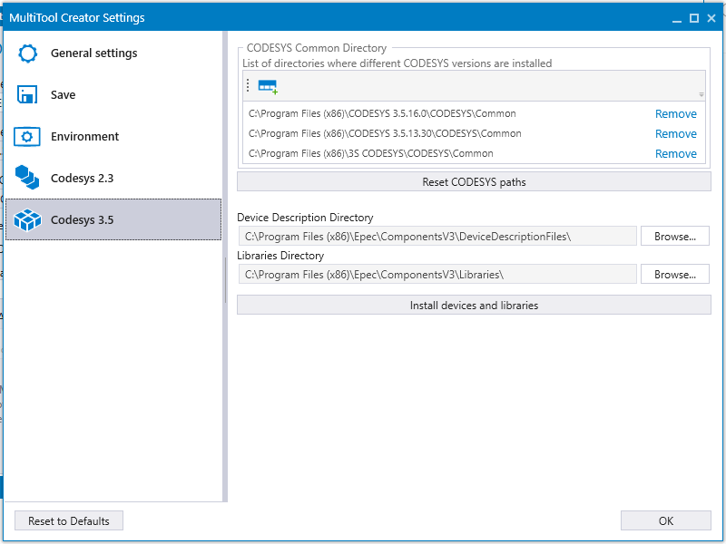

Settings dialog includes the following system settings:
registering the project extension to open projects by double-clicking them,
localization and network editor size setup,
directory paths for opening CODESYS directly from MultiTool Creator to create projects, finding project libraries and device description files,
directory paths for user defined PDIs (Predefined Indexes) and PGNs (Parameter Group Numbers)
When MultiTool Creator is opened for the first time, CODESYS related directory paths need to be given. If CODESYS was installed with default directory settings (see the table below), Use Default Settings can be selected. Otherwise, set the directories manually by selecting Customize Settings... .

To open the Settings dialog, select File > Settings or press ALT + X. To select the default settings, select Reset to Defaults.
Possible settings are listed in the following table:
|
Category |
|
Default Settings | |
|---|---|---|---|
|
General settings |
User PDIs directories |
Directories containing user defined .pdi / .xpdi files (Predefined Indexes). A network shared directory location can also be used for shared PDI contents. See also Creating PDIs. |
C:\Users\username\Documents\Epec\UserPDIs |
|
User PGNs directories |
Directories for user defined, custom PGNs shown on the J1939 tab (see User_PGN_Sets. The first directory is used as default location. A network shared directory location can also be used for shared PGN contents. Restart MultiTool Creator to enable changed directories. |
C:\Users\username\Documents\Epec\UserPGNs |
|
|
User NMEA 2000 PGNs directories |
Directories for user defined, custom PGNs shown on the NMEA 2000 tab (see User PGN Sets). The first directory is used as default location. A network shared directory location can also be used for shared PGN contents. Restart MultiTool Creator to enable changed directories. |
C:\Users\username\Documents\Epec\UserNMEAPGNs |
|
|
Custom Units directory |
Directory for user defined, custom Units in Editing Parameter CSV |
C:\Users\username\Documents\Epec\UserUnits |
|
|
Device Repository directory |
Directory for user added CANopen slave devices (see Device Repository) |
C:\Users\username\Documents\Epec\UserDevices |
|
|
Save |
Use Auto Save |
Select to use auto save function |
Enabled |
|
Keep the last autosaved version if closed without saving |
Selected: Keeps the last auto save file if closed without saving Not selected: Deletes all auto save files if closed without saving |
Enabled |
|
|
Auto Save Interval |
Set auto save interval (2-30 minutes) |
10 minutes |
|
|
Auto Save Location |
Directory for auto save files |
%temp%\MultiTool Creator\AutoSave |
|
|
Environment |
Start Maximized |
Select MultiTool Creator window size at startup (maximized/remember last) |
Maximized |
|
Max Count of Recent Projects |
Maximum count for recently opened projects list |
15 |
|
|
Locale |
Selected language for MultiTool Creator UI |
en-US |
|
|
Parameter CSV encoding |
Select encoding for CSV exports |
iso-8859-15 |
|
|
Default Receive PDO Type |
Manual/Automatic |
Manual |
|
|
Color Theme |
Select the color theme (Light, Dark, Blue) |
Light |
|
|
Register .net file extension |
Enable/disable registering .net file extension. When enabled, the created project .net files are opened in MultiTool Creator by double-clicking. Requires administrative rights. |
Enabled |
|
|
Default Project Path |
Default path for new projects. MultiTool Creator creates a directory for each project to this path |
C:\Users\username\Documents |
|
|
Convert EDS/DCF Array to SingleVariables |
By default EDS contained array is converted to SingleVariables in MultiTool Creator for compatibilty reasons. |
Enabled |
|
|
CODESYS 2.3 |
Installation directory |
Installation directory for CODESYS 2.3 |
%Program Files%\3S Software\CoDeSys V2.3 |
|
Libraries directory |
Path to the folder containing Epec libraries for CODESYS 2.3 |
%Program Files%\Epec\Libraries |
|
|
Add all CODESYS 2.3 libraries to project as a default |
All libraries are added to project by default when this box is checked |
Enabled |
|
|
CODESYS 3.5 |
Device Description Directory |
CODESYS 3.5 device description directory for Epec devices |
%Program Files%\Epec\ComponentsV3\DeviceDescriptionFiles |
|
Libraries Directory |
CODESYS 3.5 libraries directory for Epec devices |
%Program Files%\Epec\ComponentsV3\Libraries |
|
Dialog contains few CODESYS 3.5 specific features.
Reset CODESYS paths: Removes all installation path directories from the list and retrieves the default values from Windows registry.
Note! Reset to Defaults button does not reset the Common Directory path list.
Install devices and libraries: Install all Epec devices and libraries to CODESYS repository.

Epec Oy reserves all rights for improvements without prior notice.
Source file topic200016.htm
Last updated 25-Jun-2025